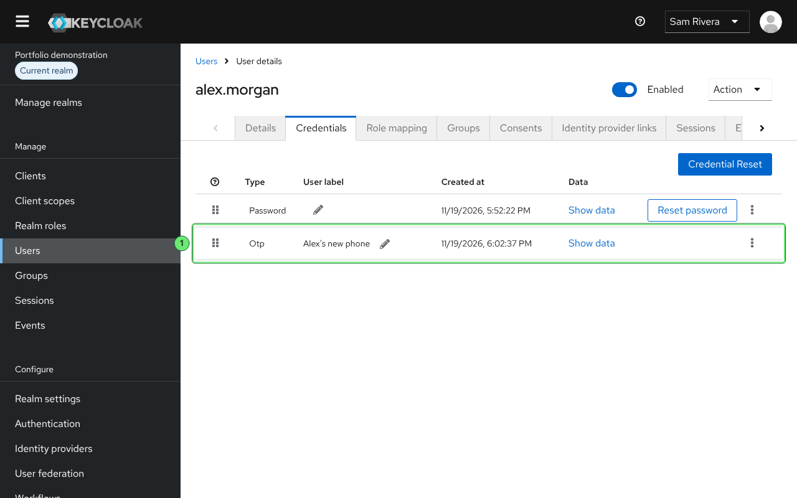

Reset a user's one-time password in Keycloak
When a user loses or replaces the phone that holds their authenticator, delete its one-time password (OTP) credential. Then make the user set up a new one at their next sign-in.
Before you begin
- Confirm that the request comes from the user. Use a phone number or an address the user gave before they lost the phone, not one in the request.
- Sign in to the admin console with an account that can manage the realm's users. I took the screens here as an administrator of the master realm.
About this task
For Keycloak administrators. Written for Keycloak 26.8.2 and checked against it. Every screen here comes from a Keycloak 26.8.2 server running on my own computer, with a test realm and test users. This is an independent guide, not official Keycloak documentation.
Procedure
- Open the row's menu, and then select Delete.

Results
On the Credentials tab, a new Otp row shows the name the user gave the new device, with today's date.

Keycloak also keeps a record. When the realm saves admin events, Events > Admin events lists the deletion as an ACTION on the user's credential, and the new required action as an UPDATE of the user.

What to do next
- If Invalid authenticator code. appears during the setup, see When a Keycloak user can't sign in with a one-time password.
- To see what the realm asks of an authenticator, such as the number of digits and how long a code lasts, see Keycloak OTP policy.